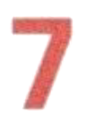
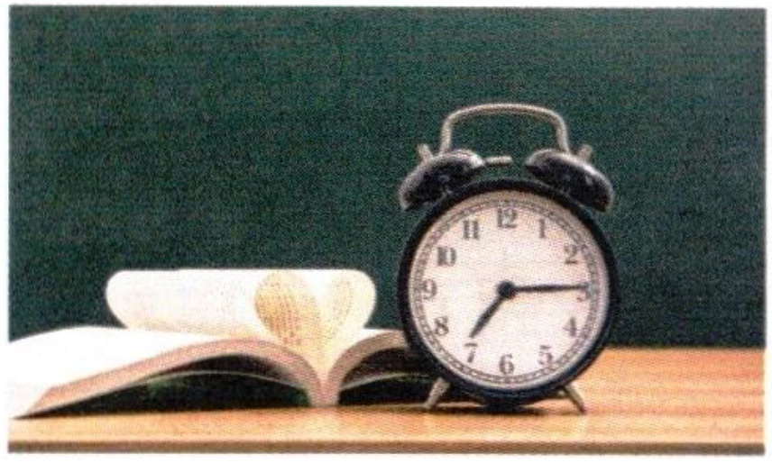

第二部分 Part IIPart IIЧасть II
第4—5题：听问题，选择正确回答。每题听两次。Questions 4-5: Listen to each question and choose the correct answer. Each question will be played twice.Вопросы 4–5: Прослушайте каждый вопрос и выберите правильный ответ. Каждый вопрос будет проигран дважды.
Jīntiān tiānqì zěnmeyàng?例如： 今天 天气 怎么样？
Example: How is the weather today?Пример: Какая сегодня погода?fēicháng rèA 非常 热
A very hotA очень жаркоhěn hǎotīngB 很 好听
B sounds beautifulB звучит красивоzài hē shuǐC 在 喝 水
C drinking waterC пьет воду4.
A 10:00
B 12:00
hàoC 12 号
5.
yuèA 8 月
sān fēnzhōngB 三 分钟
C 7:10
第三部分 Part IIIPart IIIЧасть III
第6—8题：听对话，选择最匹配的图片。每题听两次。Questions 6-8: Listen to each dialogue and choose the correct picture. Each dialogue will be played twice.Вопросы 6–8: Прослушайте каждый диалог и выберите наиболее подходящую картинку. Каждый диалог будет проигран дважды.
A
B

C
D